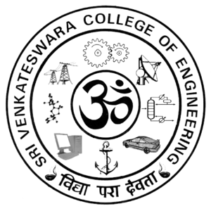
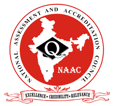

Sri Venkateswara College Of Engineering
Opening a door to the future
Sri Venkateswara College of Engineering (SVCE) is an engineering institute in Tamil Nadu, at Pennalur, Sriperumbudur near Chennai. SVCE was founded in the year 1985. The college was established by the Southern Petrochemical Industries Corporation (SPIC) group. SVCE is among the top engineering colleges of Anna University in Tamil Nadu and a Tier-I institution among self-financing colleges.
Vision
To be a leader in Higher Technical Education and Research by providing the state of the art facilities to transform the learners into global contributors and achievers.

National Assessment And Accreditation Council
Internal Quality Assurance Cell (IQAC) & Annual Quality Assurance Report (AQAR)
National Assessment and Accreditation Council (NAAC), Bangalore proposes that every accredited institution should establish an Internal Quality Assurance Cell (IQAC) as a post-accreditation quality sustenance measure. Since quality enhancement is a continuous process, the IQAC will become a part of the institution’s system and work towards realisation of the goals of quality enhancement and sustenance.
Vision
To make quality the defining element of higher education in India through a combination of self and external quality evaluation, promotion and sustenance initiatives.